Q2 Thảo Điền (Thủ Đức): thông tin dự án và 18 mặt bằng căn hộ
Cập nhật 16/11/2026 · Thông tin dự án · Soi Giá Dự Án
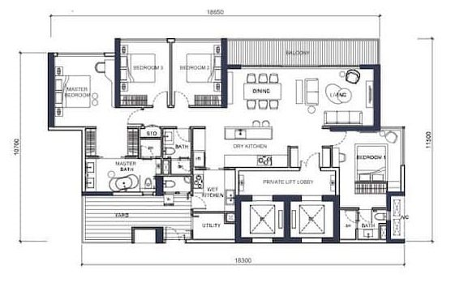
Hình 1. Một mặt bằng căn hộ tiêu biểu của Q2 Thảo Điền. Nguồn: cityrise.vn (tài liệu của dự án / đơn vị phân phối).
Lưu ý. Bài này tổng hợp thông tin công khai, không phân tích giá hợp lý và không phải tư vấn đầu tư. Mức giá trong bài chỉ là con số tham khảo gần đúng từ các nguồn công khai, không phải bảng giá của chủ đầu tư. Hình ảnh và mặt bằng do chủ đầu tư hoặc đơn vị phân phối công bố, được dùng để minh họa và dẫn nguồn; thực tế có thể khác.
1. Tóm tắt nhanh
Chủ đầu tưFrasers Property Thảo Điền
Mặt bằng18 mẫu đã thu thập
Mặt bằng hình15 mẫu khác nhau rõ rệt
Q2 Thảo Điền là dự án căn hộ – nhà phố – biệt thự của Frasers Property (Singapore) tại phường Thảo Điền, TP. Thủ Đức, do liên doanh G Homes (Frasers Property và An Dương Thảo Điền) phát triển. Dự án gồm một tòa tháp 32 tầng với 315 căn hộ, 15 nhà phố thương mại, 12 nhà phố và 6 biệt thự trên khu đất 7.956 m². Các tài liệu phân phối công bố 18 mặt bằng căn hộ kèm diện tích.
Hạng mục
Thông tin
Tên dự án
Q2 Thảo Điền
Chủ đầu tư
Frasers Property (G Homes, liên doanh với An Dương Thảo Điền)
Quy mô
1 tháp 32 tầng, 315 căn hộ; 15 nhà phố thương mại, 12 nhà phố, 6 biệt thự; đất 7.956 m²
Khởi công
Tháng 8/2018 (Unicons là nhà thầu)
Giá tham khảo
Giá rao thứ cấp khoảng 135–222 triệu/m² (xem mục 5)
Giá bán chính thức
Chưa có bảng giá chính thức trong bài; xem mục 5
Quảng cáo
2. Vị trí
Dự án nằm tại Thảo Điền, TP. Thủ Đức. Bài chỉ nêu thông tin công bố, không đánh giá vị trí.
3. Sản phẩm
Bảng dưới đây liệt kê toàn bộ mặt bằng đã thu thập; những mẫu có diện tích gần như trùng nhau được ghi chú “cùng mặt bằng”, và phần hình chỉ đặt các mặt bằng khác nhau. Diện tích có thể khác nhau tùy nguồn (tim tường hay thông thủy); cột trống nghĩa là tài liệu không công bố.
Loại / mã
Số PN
Tim tường (m²)
Thông thủy (m²)
Ghi chú
Type A
1
44,8
44,9
Type A1
1
49,5
45,0
Type A1p
1
53,5
49,2
Type Ap
1
53,2
49,1
Cùng mặt bằng với Type A1p
Type B
2
71,7
65,0
Type Bp
2
76,8
70,3
Type Bp1
2
80,1
74,0
Type Bp2
2
94,1
86,5
Type C
3
100,4
92,5
Type C1
3
101,6
92,9
Type C1p
3
112,5
104,3
Type C2
3
112,7
104,3
Cùng mặt bằng với Type C1p
Type C2p
3
121,9
113,5
Type C2p1
3
123,1
114,4
Type Cp
3
112,4
104,7
Cùng mặt bằng với Type C1p
Type C3
3
128,4
119,5
Type Dp
4
191,8
178,6
Type D
4
181,8
168,3
Quy ước: tim tường là diện tích tính đến tim tường; thông thủy là diện tích sử dụng bên trong. Số liệu theo tài liệu của dự án / đơn vị phân phối, truy cập 14/11/2026.
Căn hộ 1 phòng ngủ
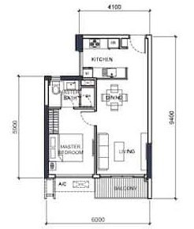
Hình 2. Mặt bằng Type A (tim tường 44,8 m², thông thủy 44,9 m²). Nguồn: cityrise.vn (tài liệu của dự án / đơn vị phân phối).
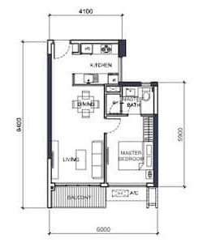
Hình 3. Mặt bằng Type A1 (tim tường 49,5 m², thông thủy 45,0 m²). Nguồn: cityrise.vn (tài liệu của dự án / đơn vị phân phối).
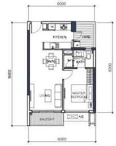
Hình 4. Mặt bằng Type A1p (tim tường 53,5 m², thông thủy 49,2 m²). Nguồn: cityrise.vn (tài liệu của dự án / đơn vị phân phối).
Căn hộ 2 phòng ngủ
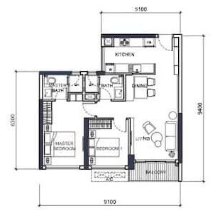
Hình 5. Mặt bằng Type B (tim tường 71,7 m², thông thủy 65,0 m²). Nguồn: cityrise.vn (tài liệu của dự án / đơn vị phân phối).
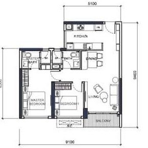
Hình 6. Mặt bằng Type Bp (tim tường 76,8 m², thông thủy 70,3 m²). Nguồn: cityrise.vn (tài liệu của dự án / đơn vị phân phối).
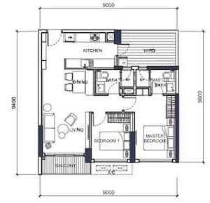
Hình 7. Mặt bằng Type Bp1 (tim tường 80,1 m², thông thủy 74,0 m²). Nguồn: cityrise.vn (tài liệu của dự án / đơn vị phân phối).
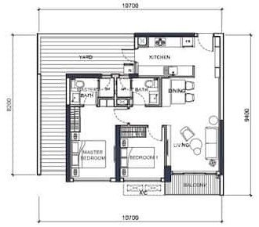
Hình 8. Mặt bằng Type Bp2 (tim tường 94,1 m², thông thủy 86,5 m²). Nguồn: cityrise.vn (tài liệu của dự án / đơn vị phân phối).
Căn hộ 3 phòng ngủ
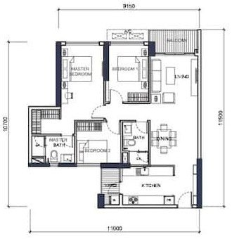
Hình 9. Mặt bằng Type C (tim tường 100,4 m², thông thủy 92,5 m²). Nguồn: cityrise.vn (tài liệu của dự án / đơn vị phân phối).
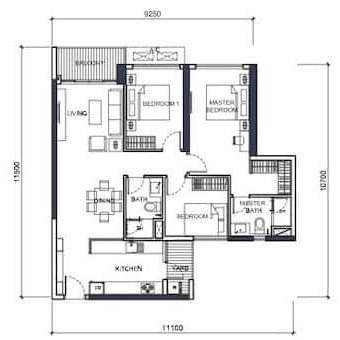
Hình 10. Mặt bằng Type C1 (tim tường 101,6 m², thông thủy 92,9 m²). Nguồn: cityrise.vn (tài liệu của dự án / đơn vị phân phối).
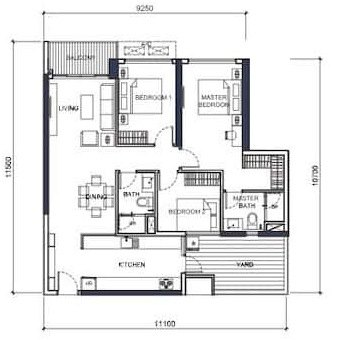
Hình 11. Mặt bằng Type C1p (tim tường 112,5 m², thông thủy 104,3 m²). Nguồn: cityrise.vn (tài liệu của dự án / đơn vị phân phối).
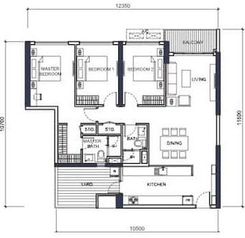
Hình 12. Mặt bằng Type C2p (tim tường 121,9 m², thông thủy 113,5 m²). Nguồn: cityrise.vn (tài liệu của dự án / đơn vị phân phối).
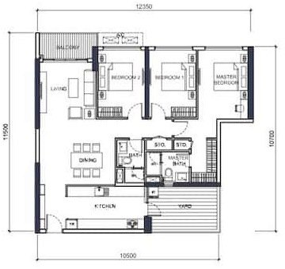
Hình 13. Mặt bằng Type C2p1 (tim tường 123,1 m², thông thủy 114,4 m²). Nguồn: cityrise.vn (tài liệu của dự án / đơn vị phân phối).
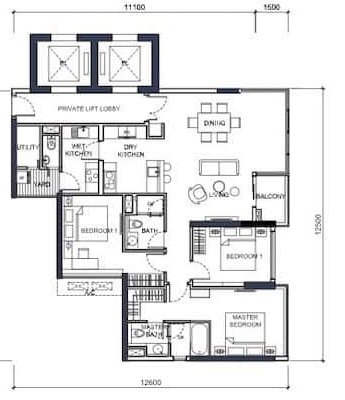
Hình 14. Mặt bằng Type C3 (tim tường 128,4 m², thông thủy 119,5 m²). Nguồn: cityrise.vn (tài liệu của dự án / đơn vị phân phối).
Căn hộ 4 phòng ngủ
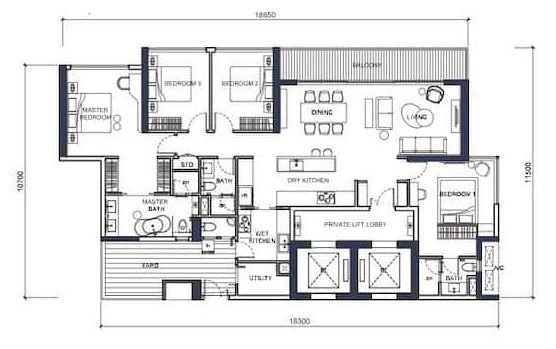
Hình 15. Mặt bằng Type Dp (tim tường 191,8 m², thông thủy 178,6 m²). Nguồn: cityrise.vn (tài liệu của dự án / đơn vị phân phối).
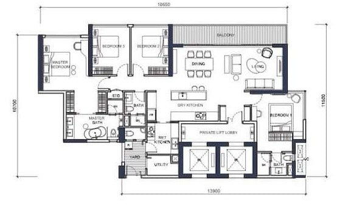
Hình 16. Mặt bằng Type D (tim tường 181,8 m², thông thủy 168,3 m²). Nguồn: cityrise.vn (tài liệu của dự án / đơn vị phân phối).
Quảng cáo
4. Tiện ích và thiết kế
Thông tin tiện ích chi tiết xem trang chính thức của dự án; bài này tập trung vào mặt bằng căn hộ.
5. Giá tham khảo (gần đúng)
Chỉ để tham khảo, có thể không chính xác. Các mức dưới đây lấy từ bài báo, trang tổng hợp và tin rao; chưa phải bảng giá của chủ đầu tư, có thể chưa hoặc đã gồm VAT, tính theo tim tường hoặc thông thủy tùy nguồn, và thay đổi theo thời điểm. Hãy hỏi chủ đầu tư để có giá hiện hành.
Nguồn / loại căn
Mức giá
Ghi chú
Giá rao thứ cấp (trang dự án batdongsan.com.vn)
135–222 triệu/m²
Giá chào bán, có thể đã cũ
Một căn 3PN 128 m²
khoảng 156–191 triệu/m²
Giá rao 20–24,5 tỷ
Trang CBRE (không rõ ngày)
từ khoảng 70 triệu/m²
Có thể là mức giá khi mở bán ban đầu
Giá rao hiện nay quanh 135–220 triệu/m²; mức khi mở bán ban đầu thấp hơn nhiều.
6. Tiến độ và nguồn cung
Chưa có thông tin chính thức trong bài: số căn từng mẫu, bảng giá hiện hành và tiến độ chi tiết; hãy hỏi chủ đầu tư.
7. Kết luận
Bài tổng hợp các mặt bằng đã công bố của Q2 Thảo Điền để dễ đối chiếu. Khi cân nhắc một căn cụ thể, hãy xác nhận mã căn, diện tích tim tường và thông thủy và giá hiện hành với chủ đầu tư.
Nguồn: cityrise.vn (mặt bằng Q2 Thảo Điền); vietstock.vn và vneconomy.vn (thông tin dự án); batdongsan.com.vn (tin rao), truy cập 14/11/2026. Hình ảnh và mặt bằng thuộc quyền của chủ đầu tư hoặc đơn vị phân phối; được dùng để minh họa và dẫn nguồn.